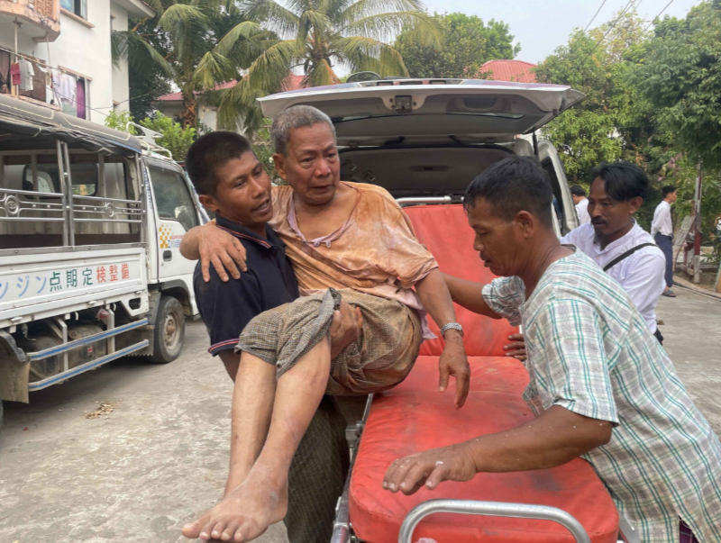
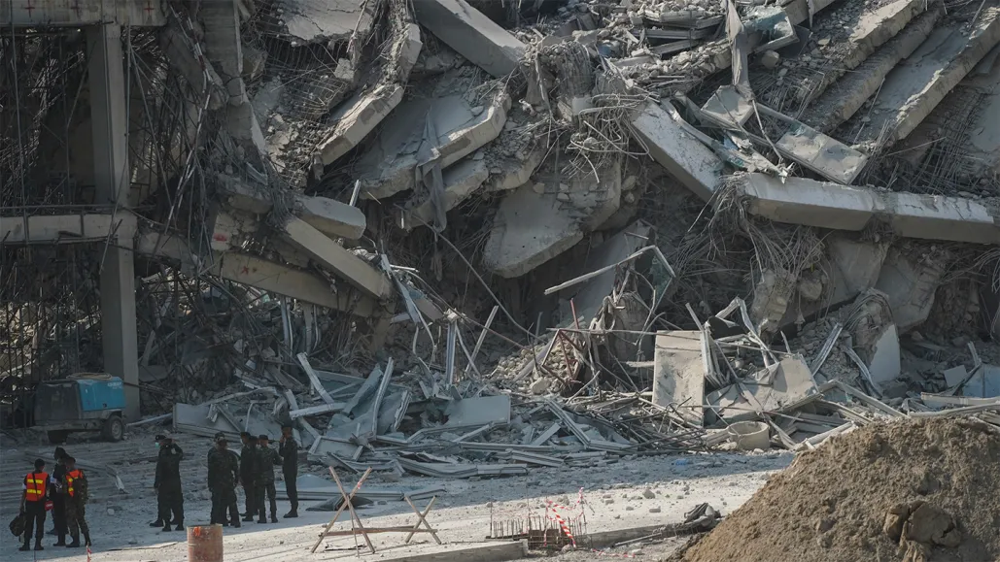

A total of 653 survivors have been rescued by emergency teams following Myanmar's 7.9-magnitude earthquake as of Thursday, the state-owned daily Myanma Alinn reported on Friday. Both local and international rescue teams carried out search and rescue operations. They were also able to retrieve 779 bodies as of Thursday, the report added from China's Daily. Despite the successful rescue of 653 individuals, the recovery process faces significant challenges. Continuous aftershocks and a lack of essential resources have hindered recovery efforts.Basic services such as clean water, electricity, and healthcare remain largely unavailable in affected areas. Most government buildings in the capital remain unrepaired, and citizens are clearing debris on their own.
Understanding Earthquakes
Earthquakes are sudden movements or shaking of the Earth’s surface caused by the release of energy from the Earth's crust. This energy release occurs when rocks break or slip along faults, resulting in seismic waves that cause the ground to shake
